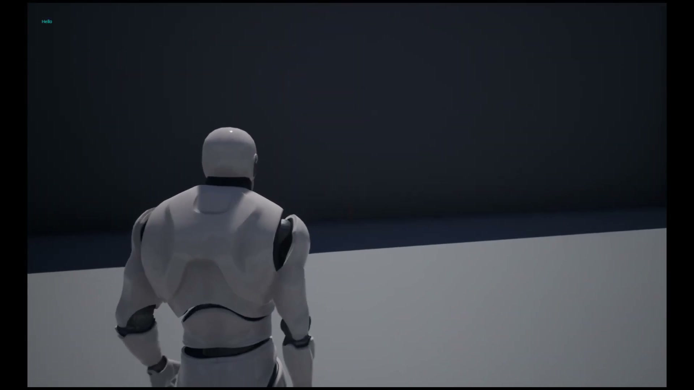
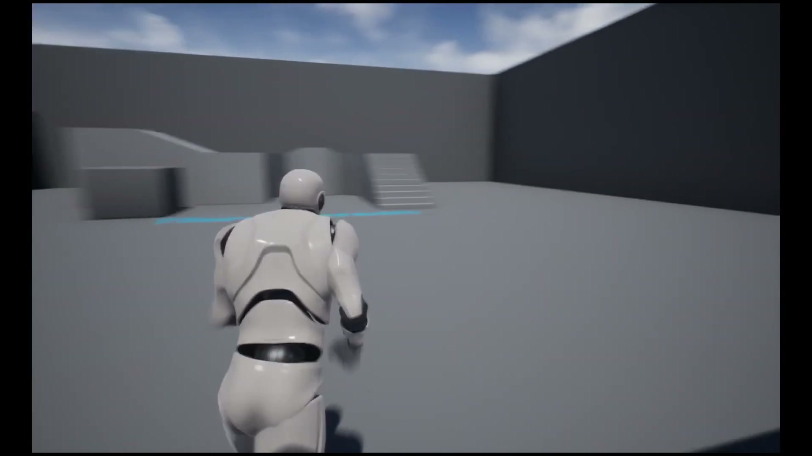

Experience
A third-person weapon interaction built around throwing an axe, sticking it to a world surface, and recalling it back into the character’s hand.

Description
The player aims and launches the weapon as a moving object in the scene. Surface contact changes its state from flight to an attached position, making the world geometry part of the interaction.
Recall can be requested while the axe is still flying or after impact. Returning it to the hand completes the loop and connects projectile movement with character attachment and animation. The project is a focused gameplay mechanic rather than evidence of an entire action-adventure campaign.

Detailed features
Aiming and axe flight
The throw uses a chosen direction and a moving weapon object. The flight gives the player visible feedback about where the axe is going before it reaches a surface.

Impact and surface attachment
A collision transitions the axe from moving freely to being attached at the impact location. This persistent state distinguishes the mechanic from a projectile that simply disappears on contact.

Recall and hand attachment
The weapon can return during flight or after sticking to a surface. The final hand attachment and animation setup reconnect it to the character and make another throw possible.
Build summary
The Unreal Blueprint source includes aiming, throw state, collision and surface attachment, recall, and character-hand attachment. A source archive and a separate downloadable build were preserved earlier; the executable has not been verified on this Mac.
- Technology
- Unreal Engine
- Scope
- Unreal project
- Presentation
- 1080p or higher
Feature video
Actual project footage · 1920 × 1080 · No narration